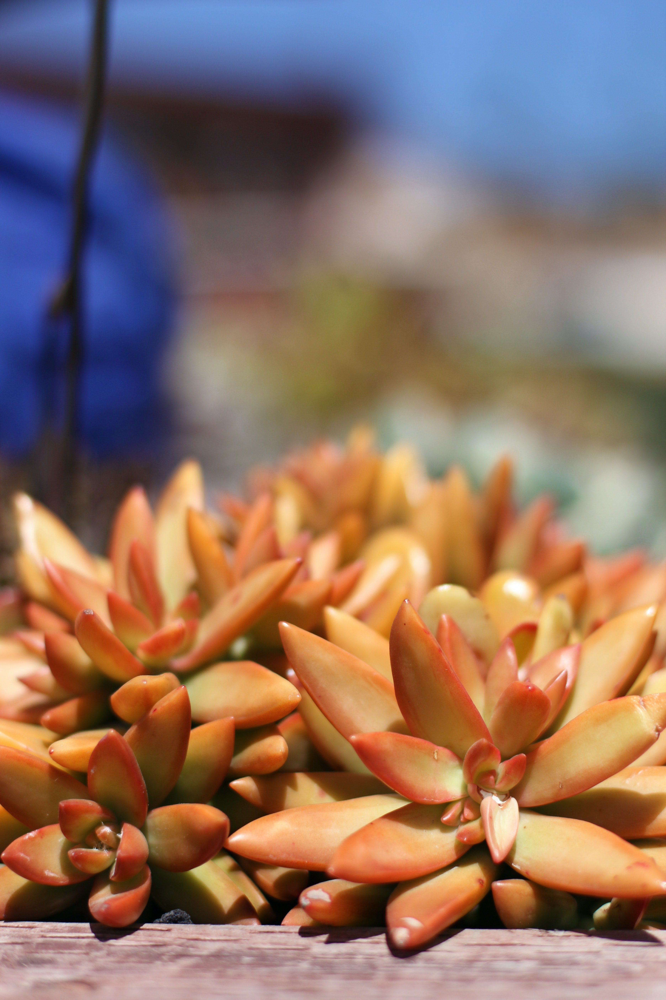
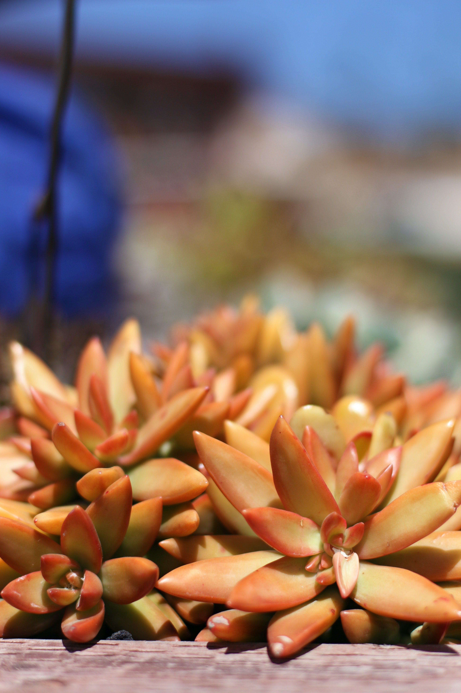

As suculentas são um grupo diversificado de plantas que possuem a habilidade de armazenar água em suas folhas, caules ou raízes. Essa adaptação lhes permite sobreviver em ambientes áridos. As suculentas são conhecidas por sua aparência única, com folhas carnudas e cheias de água, além de uma variedade de formas, cores e texturas. Elas são fáceis de cuidar e ideais para jardineiros iniciantes, pois exigem pouca rega e podem prosperar em diferentes condições de luz. As suculentas são amplamente utilizadas em arranjos e decorações, tanto em ambientes internos como externos, devido à sua beleza e capacidade de resistir a períodos de seca.
Cuidados
- Solo: As suculentas preferem um solo bem drenado para evitar o acúmulo de água. Utilize uma mistura específica para suculentas, que geralmente contém solo arenoso, perlita e matéria orgânica.
- Plantio: Escolha um vaso com boa drenagem e preencha-o com a mistura de solo para suculentas. Faça um pequeno buraco no solo e coloque a planta suculenta, pressionando levemente o solo ao redor dela.
- Temperatura: A maioria das suculentas prefere temperaturas moderadas a quentes. Elas são adaptadas a climas áridos, mas podem sofrer com temperaturas extremas. Proteja-as de geadas ou calor excessivo.
- Rega: As suculentas são plantas que armazenam água, por isso não precisam de rega frequente. Deixe o solo secar completamente entre as regas e evite encharcar as raízes. No geral, regue uma vez por semana no verão e reduza a frequência no inverno.
- Luminosidade: As suculentas necessitam de luz solar direta para crescer e prosperar. Posicione-as em locais ensolarados, como janelas voltadas para o sul. No entanto, evite a exposição direta ao sol intenso do meio-dia, pois pode causar queimaduras nas folhas.
| Tabela de Cuidados | |
|---|---|
| Luz Solar: | Luz solar direta por mais de 4 horas. |
| Rega: | 1 vez por semana em meses quentes e em quantidade reduzida nos meses frios. |
| Temperatura: | Temperatura moderada e quente. |
Lembre-se de que cada tipo de suculenta pode ter preferências específicas em relação ao solo, temperatura e cuidados. Portanto, é importante pesquisar e entender as necessidades específicas da variedade que você possui. Observe suas plantas de perto para identificar sinais de excesso ou falta de água e ajuste os cuidados conforme necessário. Com a devida atenção, as suculentas podem ser plantas bonitas e de fácil manutenção para trazer charme a qualquer espaço.
Galeria
 
